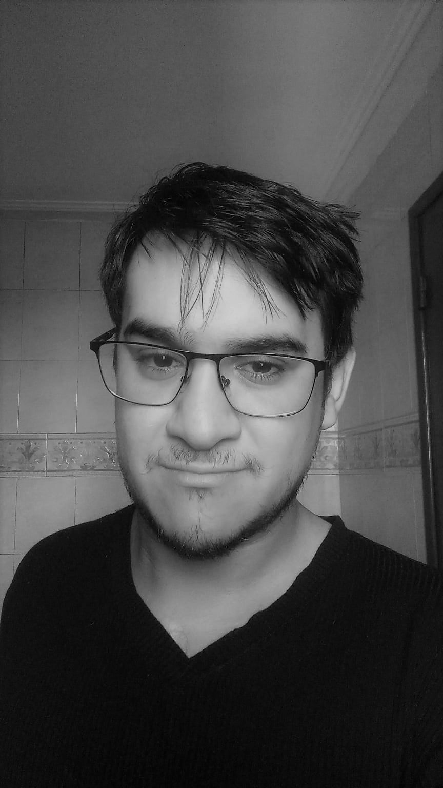
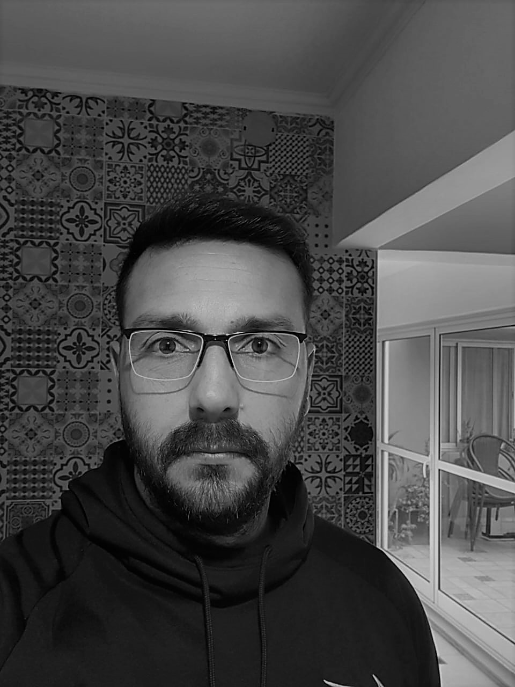
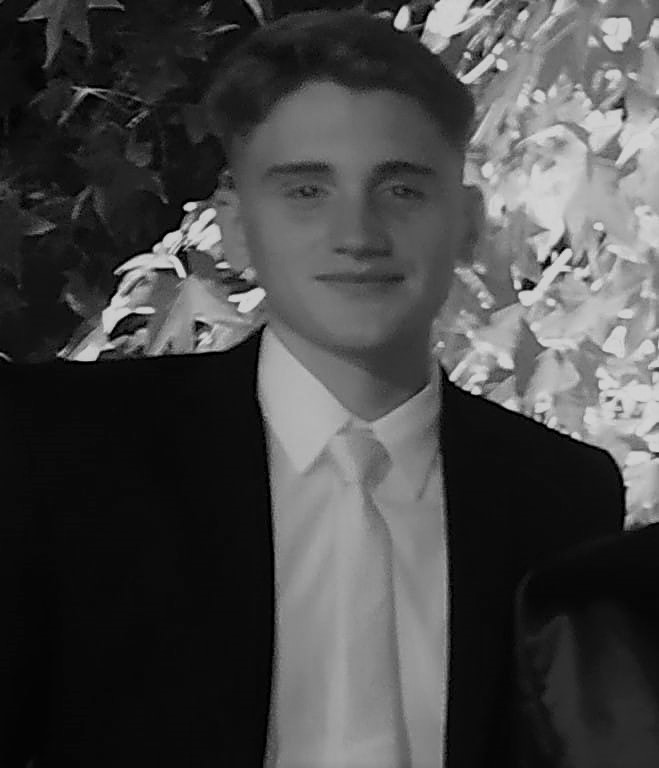
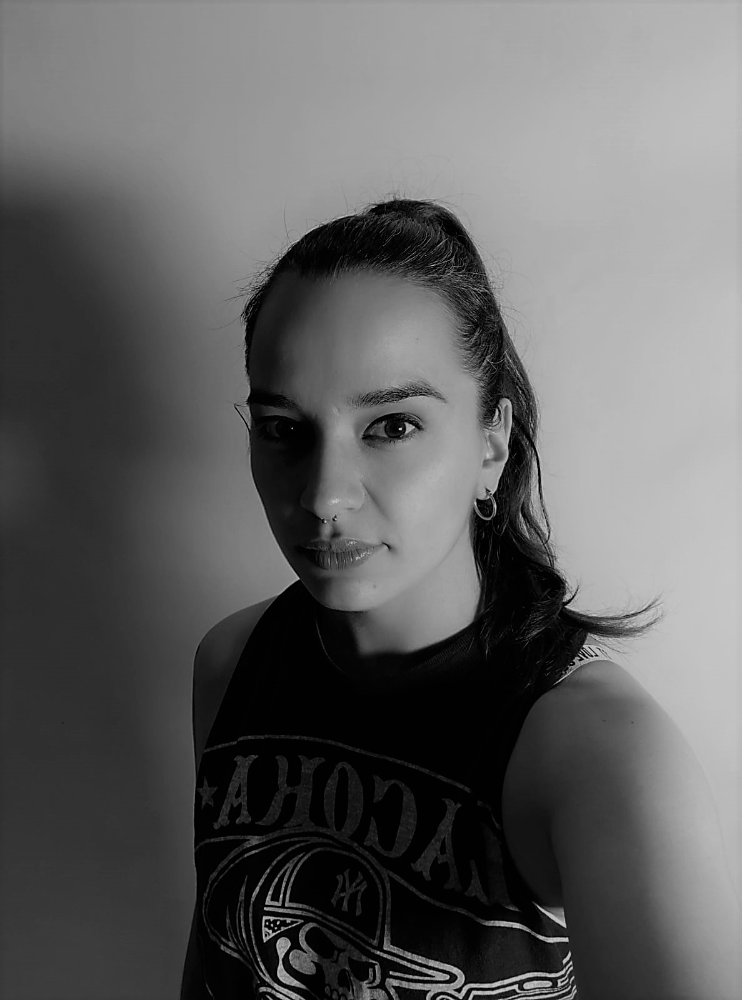

Nosotros
¡HOLA! Somos un equipo de Desarrolladores Junior cursando la carrera de Fullstack en Rolling Code School (COMISION 36i) en Tucumán - Argentina.
Este proyecto E-commerce surgió para potenciar la venta de obra de arte de productores locales. Esperamos que este antecedente sirva para seguir aportando herramientas a la cultura de Tucumán.

Federico Angulo
Dev

Mauricio Dohrman
Dev

Pablo Cutuli
Dev

Sol Rodriguez Diaz
Dev